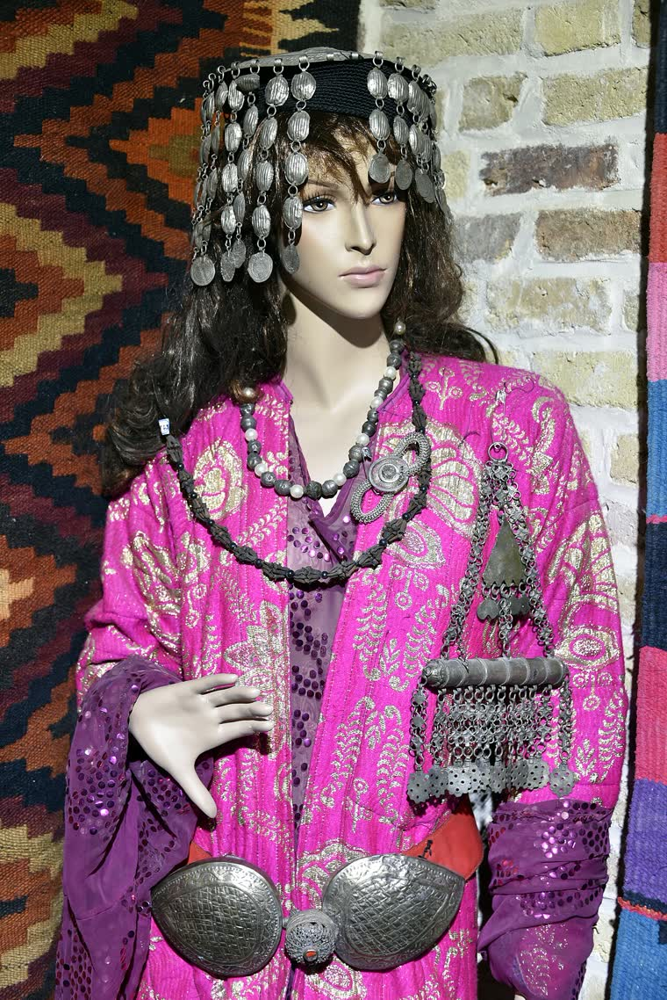
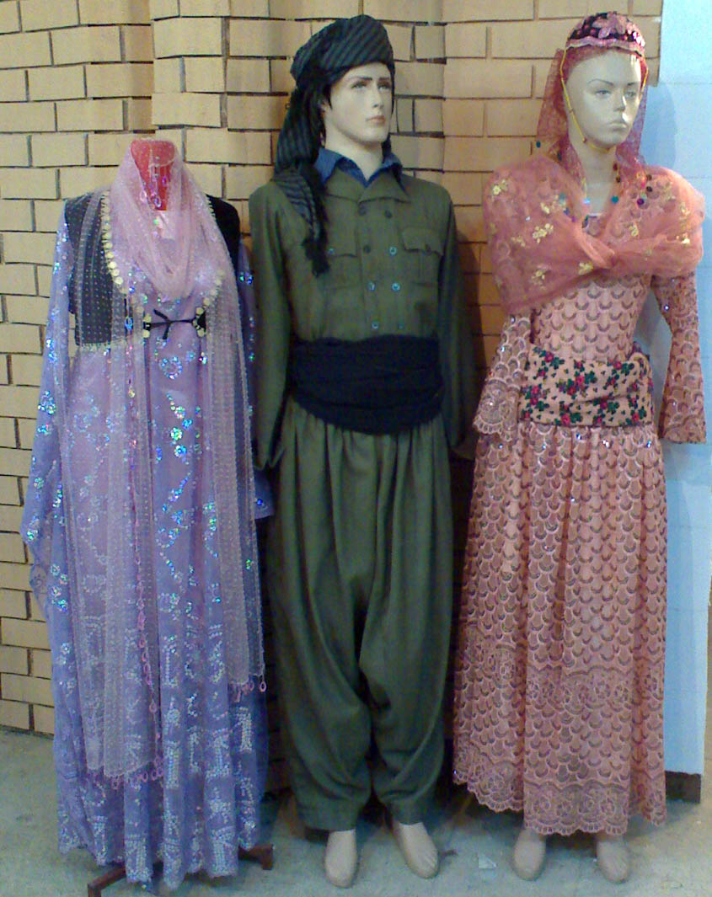
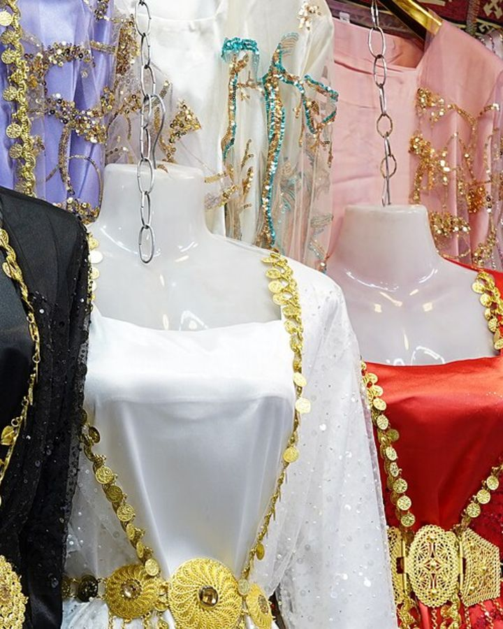

Kapak — Fotoğraf: Osama Shukir Muhammed Amin · CC BY-SA 4.0 · KaynaklarBu rehberde terziye gitmeden önce neleri hazırlamanız gerektiğini, hangi ölçülerin nereden ve nasıl alındığını, kesim ile bolluk tercihinizi terziye hangi kelimelerle anlatacağınızı, prova sırasında tek tek neyi kontrol edeceğinizi, kaç provanın normal sayıldığını, hazır bir giysinin nereden ne kadar daraltılabileceğini ve düğün gibi tarihi belli bir etkinlik için kaç hafta önceden başlamanız gerektiğini bulacaksınız. Yazının ortasında kopyalayıp yanınızda götürebileceğiniz bir ölçü tablosu ve bir prova kontrol listesi var.
Terzide iş genellikle ölçüde değil, iletişimde aksar. Ölçüyü terzi zaten doğru alır; ancak "nasıl dursun istiyorsunuz" sorusuna verilen belirsiz cevap, dikimin sonunda beğenmediğiniz bir giysiye dönüşür. Aşağıdaki bölümler tam olarak bu boşluğu kapatmak için sıralandı.
Terziye Gitmeden Önce Yapılacak Hazırlık
Ölçü randevusuna hazırlıksız gitmek, ölçülerin 1-3 cm yanlış çıkmasının en yaygın nedenidir. Randevudan önce ayıracağınız 20 dakika, ilerideki bir prova turunu tamamen ortadan kaldırabilir.
- Giysinin altına giyeceğiniz iç giyimle gidin. Destekli sutyen ile dolgusuz sutyen arasındaki fark göğüs çevresinde 2-4 cm'e kadar çıkabilir. Toparlayıcı korse kullanacaksanız ölçü sırasında da üzerinizde olsun.
- Giyeceğiniz ayakkabıyı yanınızda götürün. Etek ve pantolon boyu doğrudan topuk yüksekliğine bağlıdır; 3 cm'lik topuk ile 8 cm'lik topuk arasında boyda yaklaşık 5 cm fark oluşur.
- Referans fotoğraf hazırlayın. İki üç görsel yeter: biri genel siluet, biri yaka, biri kol ya da etek ucu detayı için. "Şuradaki gibi ama kolu daha bol" cümlesi, uzun bir tarifin yerini tutar.
- Beğendiğiniz mevcut bir giysinizi götürün. Dolabınızda size en iyi oturan gömlek veya elbise, terzi için en güvenilir referanstır. Terzi o giysiyi masaya yayıp ölçüsünü alabilir.
- Kumaşınız hazırsa yanınızda olsun. Kumaşın esneme payı, dökümü ve kalınlığı kalıbı doğrudan etkiler; terzi kumaşı elleyip görmeden bolluk kararı vermek istemez.
- Saç ve baş örtüsü planınızı söyleyin. Yakanın açıklığı ve omuz genişliği, üstüne takılacak aksesuar ve örtüye göre değişebilir.
Ölçü randevusunu günün ortasına alın. Sabah erken saatlerde bel ve karın çevresi, akşam saatlerine göre çoğunlukla 1-2 cm daha dardır; gün ortası ikisinin arasında dengeli bir ölçü verir.
Hangi Ölçüler Alınır? Ölçü Tablosu
Aşağıdaki tablo, kadın üst giyim ve uzun elbise dikimi için genellikle istenen temel ölçüleri, ölçünün nereden alındığını ve en sık yapılan hatayı bir arada veriyor. Ölçüleri santimetre cinsinden ve virgülden sonra tek hane olacak şekilde not edin.
| Ölçü | Nereden alınır | Dikkat edilecek nokta |
|---|---|---|
| Göğüs çevresi | Göğsün en dolgun noktasından, mezura yere paralel | Mezura arkada sırtta kaymamalı; nefes normal, göğüs şişirilmemeli |
| Alt göğüs | Göğsün hemen altından, kaburga hizasından | Göğüs altı vurgulu kesimlerde (kloş, empire bel) belirleyici ölçüdür |
| Bel | Gövdenin en ince yerinden, çoğunlukla göbek deliğinin 2-3 cm üstü | Karın içeri çekilmemeli; mezura ile ten arasına 1 parmak girmeli |
| Kalça | Kalçanın en geniş noktasından, ayaklar bitişik | Cep ve telefon boşaltılmalı; kalın etek altta olmamalı |
| Omuz genişliği | Bir omuz ucundan diğerine, sırttan geçerek | Omuz ucu, kolun döndüğü kemik çıkıntısıdır; 1 cm hata kolu bozar |
| Kol boyu | Omuz ucundan dirsek üzerinden bileğe | Kol hafif kırık (30 derece bükülü) tutulmalı; düz kolda ölçü kısa çıkar |
| Kol çevresi (pazu) | Kolun en kalın yerinden, koltuk altının 3-4 cm altı | Kol yana serbest sarkarken ölçülür; 1,5-3 cm rahatlık payı eklenir |
| Bilek çevresi | Bilek kemiğinin üstünden | Manşetli ve düğmeli kollarda 2 cm pay bırakılır, yoksa el geçmez |
| Sırt genişliği | İki koltuk altı arası, kürek kemiği hizasından | Kollar yanda serbest dururken alınır; kollar öne gelirse ölçü şişer |
| Ön beden boyu | Omuz çukurundan göğüs üzerinden bele | Göğüs vurgusunun yerini bu ölçü belirler |
| Arka beden boyu | Boyun köküyle bel arası, sırttan | Bel dikişinin hizası bu ölçüye göre oturur |
| Boy (omuzdan yere) | Omuz üstünden yere kadar, ayakkabılı | Ayakkabısız alınırsa etek boyu her seferinde kısa kalır |
| Etek boyu | Belden istenen bitiş noktasına | Ayakkabıyla, ayakta ve dik dururken belirlenir; yerden 1-2 cm boşluk bırakılır |
| Boyun çevresi | Boynun dibinden, gırtlağın altından | Yaka tipini belirler; dik yakalarda 1,5-2 cm pay şarttır |
Ölçü Alırken Uyulacak 6 Kural
- İnce bir kıyafetle ölçülün. Kazak, hırka, kalın gömlek her ölçüye 2-4 cm ekler.
- Mezura ne gergin ne gevşek olsun. Doğru gerginlik testi basit: mezura ile ten arasına bir parmağınız rahatça girmeli, ikisi girmemeli.
- Mezura yere paralel olsun. Göğüs, bel ve kalçada mezuranın arkası düşerse ölçü 1-3 cm büyük çıkar. Mümkünse aynanın karşısında ölçülün.
- Doğal duruşta durun. Karın içeri çekilmez, omuz geriye atılmaz, ayaklar omuz genişliğinde ve düz durur.
- Ölçüyü başkası alsın. Kendi kendinize ölçü alırken sırt ve arka beden ölçüleri neredeyse her zaman hatalıdır.
- Ölçüleri iki kez alın ve yazın. Aynı ölçüde iki farklı sonuç çıkıyorsa üçüncü kez alıp ortasını kaydedin. Ölçü kâğıdının bir fotoğrafını telefonunuza kaydedin; sonraki dikimlerde işinizi çok kolaylaştırır.
Terziye Ne Söylemeli? Kesim, Bolluk, Kol ve Yaka
Terziye "güzel olsun" demek yerine dört başlıkta net konuşun: siluet, bolluk, kol, yaka. Bu dört başlık kararlaştırıldığında geri kalanı teknik detaydır.
Bolluk tercihi: rahatlık payı ne kadar olmalı?
Bolluk, ölçünüzün üstüne eklenen "rahatlık payı" ile ifade edilir. Terziye "bol olsun" demek yerine aşağıdaki tablodan hangi aralığı istediğinizi söylemek çok daha isabetli sonuç verir.
| Oturum tercihi | Göğüste eklenen pay | Belde eklenen pay | Uygun olduğu durum |
|---|---|---|---|
| Oturan / dar | 2-4 cm | 1-2 cm | Kalıplı üst beden, korsajlı elbise; esnek astar gerekir |
| Normal | 5-8 cm | 3-4 cm | Günlük elbise, gömlek, tunik; en yaygın tercih |
| Rahat | 10-14 cm | 6-8 cm | Uzun süre oturulacak davetler, yemekli kutlamalar |
| Bol / dökümlü | 15 cm ve üzeri | Belde vurgu yok | Geleneksel bol kesimler, kloş etekli uzun elbiseler |
Kol ve yaka için söylemeniz gerekenler
- Kol tipi: düz kol, balon kol, karpuz kol, reglan, yarasa, volanlı kol. Ayrıca kol ucunun bilekte mi bitmesini yoksa eli örtmesini mi istediğinizi belirtin.
- Kol boyu: "uzun" yerine "bilek kemiğini 2 cm geçsin" gibi ölçülü konuşun.
- Yaka: dik yaka, hâkim yaka, V yaka, bisiklet yaka, kayık yaka. V yaka istiyorsanız derinliğini parmakla değil santimle söyleyin: "boyun çukurundan 8 cm aşağı" gibi.
- Kapama: önden düğme mi, yandan gizli fermuar mı, arkadan mı? Fermuar yeri, tek başına giyinip giyinemeyeceğinizi belirler.
- Astar: tam astar mı, yarım astar mı, astarsız mı? İşlemeli ve nakışlı kumaşlarda astar cildi korur.
- Cep: isteniyorsa yan dikiş cebi mi, gizli cep mi; derinliği kaç cm olsun.
Kesim adlarını konuşmakta zorlanıyorsanız yöresel giyim sözlüğündeki terimlere göz atmak işinizi kolaylaştırır. Kırasfistan gibi katmanlı bir elbisede iç ve dış katmanın boy farkını, şal û şepik takımında ise ceket boyu ile pantolon paçasının oranını baştan konuşmak gerekir.
Provada Kontrol Listesi
Prova, giysiyi görme değil test etme anıdır. Aynanın karşısında hareketsiz durup "güzel olmuş" demek, evde ortaya çıkan sorunların birinci sebebidir. Provada şu 12 maddeyi sırayla geçin:
- Omuz oturması: Omuz dikişi tam omuz ucunda mı bitiyor? İçeride kalıyorsa dar, sarkıyorsa geniştir. En zor düzeltilen bölge budur, önce buna bakın.
- Kol hareketi: İki kolunuzu öne uzatın, sonra başınızın üstüne kaldırıp indirin. Koltuk altı sıkışıyor veya bütün beden yukarı kalkıyorsa kol oyuntusu yeniden düzenlenmeli.
- Sırt genişliği: Kollarınızı öne getirip kendinizi kucaklayın. Sırtta çekme oluyorsa sırt dar demektir.
- Bel hizası: Bel dikişi sizin en ince yerinizde mi duruyor? 2 cm aşağıda kalan bir bel dikişi boyu kısaltılmış gösterir.
- Nefes payı: Bel bandı ile karnınız arasına iki parmağınız rahat girmeli. Derin nefes alın; sıkışma varsa dikimden sonra bu his artacaktır.
- Oturma testi: Sandalyeye oturun ve 30 saniye bekleyin. Bel batıyor, etek yukarı kaçıyor veya dikişler geriliyorsa pay yetersizdir.
- Yürüme testi: Beş on adım yürüyün, sonra dönün. Dar kalıplı uzun eteklerde adım genişliği (yürüme payı) yetmiyorsa yırtmaç veya kuş eklenmelidir.
- Etek boyu: Ayakkabınızı giyerek ve dik dururken kontrol edin. Uzun eteklerde yerden 1-2 cm boşluk, hem yürümeyi kolaylaştırır hem de eteğin çabuk kirlenmesini önler.
- Göğüs pensi: Pens ucu göğsün en dolgun noktasının 2-3 cm gerisinde bitmeli; tam tepede biterse kumaşta sivrilme olur.
- Yaka duruşu: Öne eğilin. Yaka açılıp aralanıyorsa kapama noktası değişmeli.
- Simetri: Aynada iki kol boyunu, iki etek kenarını ve yaka uçlarını karşılaştırın. Omuz yüksekliği farkı yaygındır ve terzi bunu telafi edebilir.
- Kumaş yönü ve desen eşleşmesi: Çizgili, kareli ve büyük desenli kumaşlarda dikiş yerlerinde desenin devam edip etmediğine bakın.
Provada beğenmediğiniz bir şey varsa nazikçe ama açıkça söyleyin. "Buranın biraz daha bol olmasını isterim" cümlesi, sonradan yapılacak büyük bir müdahaleden çok daha kolaydır. Prova sırasında telefonla önden, yandan ve arkadan birer fotoğraf çekin; aynada fark etmediğiniz duruş bozukluklarını fotoğrafta çoğunlukla görürsünüz.
Kaç Prova Normaldir?
Prova sayısı giysinin karmaşıklığına ve kumaşın davranışına göre değişir. Aşağıdaki aralıklar genel bir beklenti çerçevesi verir; usta terziler bazen daha az provayla da sonuca ulaşır.
| Giysi tipi | Tipik prova sayısı | Ortalama süre |
|---|---|---|
| Basit etek, düz tunik | 1-2 | 1-2 hafta |
| Günlük elbise, gömlek | 2 | 2-3 hafta |
| Uzun tören elbisesi | 2-3 | 3-5 hafta |
| İşlemeli, nakışlı özel dikim | 3-4 | 6-10 hafta |
| Takım (ceket + pantolon) | 2-3 | 4-6 hafta |
İlk prova çoğunlukla teyelli, yani iri dikişlerle geçici birleştirilmiş hâlde yapılır; bu aşamada beden ve oturma kontrol edilir. İkinci provada kol, yaka ve boy netleşir. Üçüncü prova varsa ince ayar provasıdır: düğme yeri, etek ucu, süsleme yerleşimi.
Hazır Giysiyi Daralttırma: Sınırlar Nerede?
Hazır alınmış bir giysi her yerden istendiği kadar daraltılamaz. Genel kural şudur: daraltmak kolaydır, genişletmek dikiş payı kadar mümkündür. Sanayi tipi dikimde dikiş payı çoğunlukla 1-1,5 cm'dir; yani bir yan dikişten toplamda ancak 2-3 cm kazanabilirsiniz.
| Bölge | Genelde daraltılabilir | Genelde genişletilebilir | Not |
|---|---|---|---|
| Yan dikişler (bel-göğüs) | 4-6 cm | 2-3 cm | En güvenli müdahale bölgesi |
| Kalça | 3-4 cm | 2 cm | Cep varsa cep ağzı kayabilir |
| Omuz | 1-2 cm | Neredeyse hiç | Kolun sökülüp yeniden takılmasını gerektirir, maliyetlidir |
| Kol boyu | 3-6 cm | 1-2 cm | Manşetli kollarda manşet sökülüp yeniden dikilir |
| Kol çevresi | 2-3 cm | 1 cm | Fazla daraltma kol hareketini kısıtlar |
| Etek boyu (kısaltma) | Serbest | 2-4 cm | Kloş ve volanlı eteklerde kısaltma işçiliği artar |
| Sırt orta dikişi | 2-3 cm | 1-2 cm | Fermuar varsa fermuar değişimi gerekebilir |
Bir giysi hem omuzdan hem göğüsten hem de kalçadan büyükse, tadilat yerine bir beden küçüğünü aramak çoğunlukla daha akıllıcadır. Genel kural: omuza ve göğse göre alın, beli terziye daralttırın. İşlemeli veya nakışlı kumaşlarda ise daraltma sınırı desenin bozulmasıyla belirlenir; nakış dikiş hattına yakınsa terzi 1-2 cm'den fazlasına giremez.
Sık Yapılan 8 Hata
- Ayakkabısız prova yapmak. Etek boyu hatalarının çoğu buradan çıkar.
- Farklı iç giyimle ölçü verip başka iç giyimle giymek. Üst beden oturmasını doğrudan bozar.
- "Zayıflarım" diyerek küçük ölçü verdirmek. Daraltmak her zaman mümkündür, genişletmek değil.
- Provada yalnızca ayakta durmak. Oturma ve kol kaldırma testleri yapılmadan prova tamamlanmış sayılmaz.
- Kumaşı önceden yıkatmamak. Pamuk ve keten kumaşlar ilk yıkamada genellikle yüzde 3-5 çeker; dikimden önce ön yıkama yapılmalıdır.
- Son provayı etkinliğe bir gün kala yapmak. Düzeltme için zaman kalmaz.
- Aksesuarı prova gününe götürmemek. Kemer, broş, puşi ya da omuz şalı, giysinin duruşunu değiştirebilir.
- Sözlü anlaşmayla kalmak. Ölçüleri, teslim tarihini ve ücreti yazılı ya da mesajla kayıt altına almak iki taraf için de rahatlatıcıdır.
Zamanlama Planı: Düğünden Kaç Hafta Önce Başlamalı?
Özel dikim bir tören giysisi için rahat bir plan 10-12 hafta, sıkışık ama uygulanabilir bir plan 6-8 haftadır. Yoğun düğün mevsiminde terzilerin takvimi dolduğu için erken başlamak fiyat ve seçenek açısından da avantaj sağlar.
- 12-10 hafta kala: Model kararı, referans görsellerin toplanması, kumaş ve astar seçimi. Kumaş ön yıkaması bu haftalarda yapılır.
- 10-8 hafta kala: Terziyle ilk görüşme ve ölçü alımı. Ayakkabı ve iç giyim bu randevuda yanınızda olmalı.
- 6 hafta kala: Birinci (teyelli) prova. Beden oturması, omuz ve kol oyuntusu kontrol edilir.
- 4 hafta kala: İkinci prova. Yaka, kol boyu, bel hizası ve etek boyu netleşir.
- 2 hafta kala: Son prova ve ince ayar. Düğme, kopça, süsleme yerleşimi tamamlanır.
- 1 hafta kala: Teslim, gerekiyorsa ütü veya kuru temizleme, aksesuarlarla birlikte tam deneme.
- 2-3 gün kala: Giysiyi asılı ve nefes alan bir kılıf içinde dinlendirin; naylon poşette bekletmeyin.
Kilo değişimi bekliyorsanız son provayı mümkün olduğunca etkinliğe yakın, ancak en az 10-14 gün öncesine planlayın. Üç kilonun üzerindeki değişimler bel ve kalça ölçüsünde 2-3 cm'lik fark yaratabilir.
Model ve kesim fikri arıyorsanız blog yazılarımıza göz atabilir, sıkça sorulanlara SSS sayfamızdan ulaşabilirsiniz. İyi bir terzi ilişkisi tek seferlik değildir: ölçü kâğıdınız bir kez doğru oluşturulduğunda, sonraki dikimler çok daha kısa sürede ve daha az provayla tamamlanır.
Sıkça Sorulan Sorular
Terziye ilk gidişte yanımda ne götürmeliyim?
Giysinin altına giyeceğiniz iç giyimi üzerinizde, giyeceğiniz ayakkabıyı ise yanınızda götürün. Ayrıca iki üç referans fotoğraf ve dolabınızda size en iyi oturan benzer bir giysi çok işe yarar. Kumaşınız hazırsa terzinin dökümü görebilmesi için onu da getirin.
Ölçü alırken mezura ne kadar sıkı olmalı?
Mezura ne gergin ne de gevşek olmalı. Doğru gerginliğin basit testi şudur: mezura ile teniniz arasına bir parmağınız rahatça girmeli, ikinci parmak girmemeli. Mezura göğüs, bel ve kalçada yere paralel durmalı, arkada aşağı kaymamalıdır.
Kaç prova yapılması normaldir?
Basit bir etek ya da tunik genellikle 1-2 provayla biter. Uzun tören elbiselerinde 2-3, işlemeli özel dikimlerde 3-4 prova yaygındır. İlk prova çoğunlukla teyelli yapılır ve bedenin oturması kontrol edilir.
Hazır aldığım elbise her yerinden daraltılabilir mi?
Hayır. Yan dikişlerden genellikle 4-6 cm daraltma mümkündür, ancak omuzdan yalnızca 1-2 cm alınabilir ve bu kolun sökülüp yeniden takılmasını gerektirir. Genişletme ise dikiş payıyla sınırlıdır; sanayi dikiminde bu pay çoğunlukla 1-1,5 cm olduğu için toplamda 2-3 cm kazanılır.
Provada mutlaka yapmam gereken hareketler neler?
Kollarınızı başınızın üstüne kaldırıp indirin, kendinizi kucaklar gibi öne uzatın, sandalyeye oturup 30 saniye bekleyin ve birkaç adım yürüyün. Bu dört hareket kol oyuntusu, sırt genişliği, nefes payı ve yürüme payı sorunlarının çoğunu ortaya çıkarır.
Düğün için terziye kaç hafta önce başlamalıyım?
Özel dikim bir tören giysisi için rahat bir plan 10-12 hafta, sıkışık ama uygulanabilir bir plan 6-8 haftadır. Son provayı etkinlikten en az 10-14 gün önceye koyun ki düzeltme için zaman kalsın. Yoğun düğün mevsiminde terzilerin takvimi dolduğu için erken başlamak avantaj sağlar.
Kültürden Kareler

